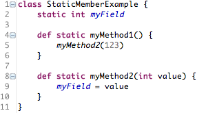
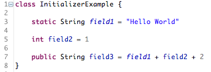
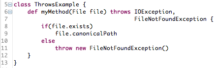
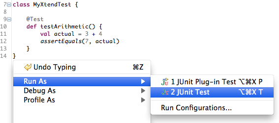
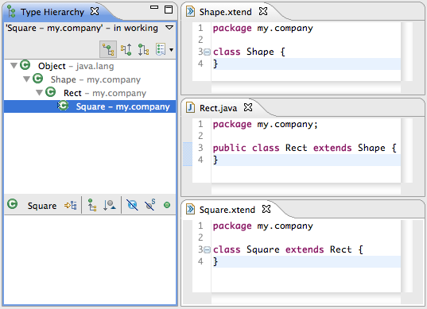
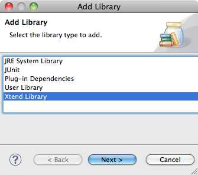
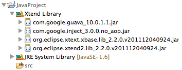

| Constructors |
It is now possible to declare constructors in Xtend classes. To avoid redundant typing of
long class names, constructors are always named "new".

|
| Static Members |
Fields and Methods can now be static. Even though best practices suggest to avoid statics, they can be needed to
integrate with other frameworks or to implement Java's "main" method.

|
| Field Initializer |
Field declarations can now specify an expression to initialized the field with a value.
Note, that since in Xtend everything is an expression, fields can be initialized with whole blocks.

|
| "throws" Clause |
Methods can now specify which exceptions they throw. However, Xtend does not require you to catch or pass on
checked exceptions, since all exceptions are treated as unchecked.

|
| Get Started Easily |
Getting started is now simpler than ever:
- Create a new Java Project
- Create a new Xtend class via "New..." "Xtend Class"
- In the Xtend class, trigger the Quick Fix to add the Xtend library to the class path

|
| "Run as ..." |
Via the "Run As ..." and "Debug As ..." menus and keyboard shortcuts, Xtend files can now be executed as
Java Application, JUnit Test and JUnit Plug-In Test.


|
| Maven Support |
Xtend compilation can be executed standalone. No Eclipse required.
There even is a Maven plugin for that. Also Xtend's standard lib is available
from a Maven repository. Read more »
<build>
<plugins>
<plugin>
<groupId>org.eclipse.xtend2</groupId>
<artifactId>xtend-maven-plugin</artifactId>
<version>2.2.0</version>
<executions>
<execution>
<goals>
<goal>compile</goal>
</goals>
</execution>
</executions>
</plugin>
</plugins>
</build>
|
| Type Hierarchy |
JDT's Type Hierarchy does now also work for Xtend classes. In the screenshot, you can see
an inheritance hierarchy that mixes Java and Xtend classes.

|
Quick Fix
"Implement Members" |
In case an Xtend class extends an abstract class or implements an interface, there is now a Quickfix
available to create stubs for all methods that need to be implemented.

|
| Xtend Lib |
Xtend ships with a small set of libraries, which are now available in a predefined container.
There also is a quick fix to add this library to your project's class path conveniently.
The library can alternatively be retrieved from a Maven repository : Read more »


|